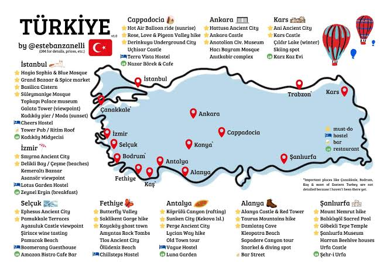

About This Project
This website was launched on to show the cultural and natural wonders of Turkey.
Here is the informations of must-see destinations for travelers.

"Traveling – it leaves you speechless, then turns you into a storyteller." – Ibn Battuta
Click to view our editorial guidelines
All recommendations are curated independently without commercial sponsorships.